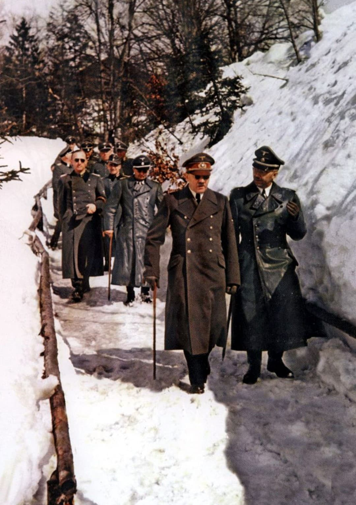
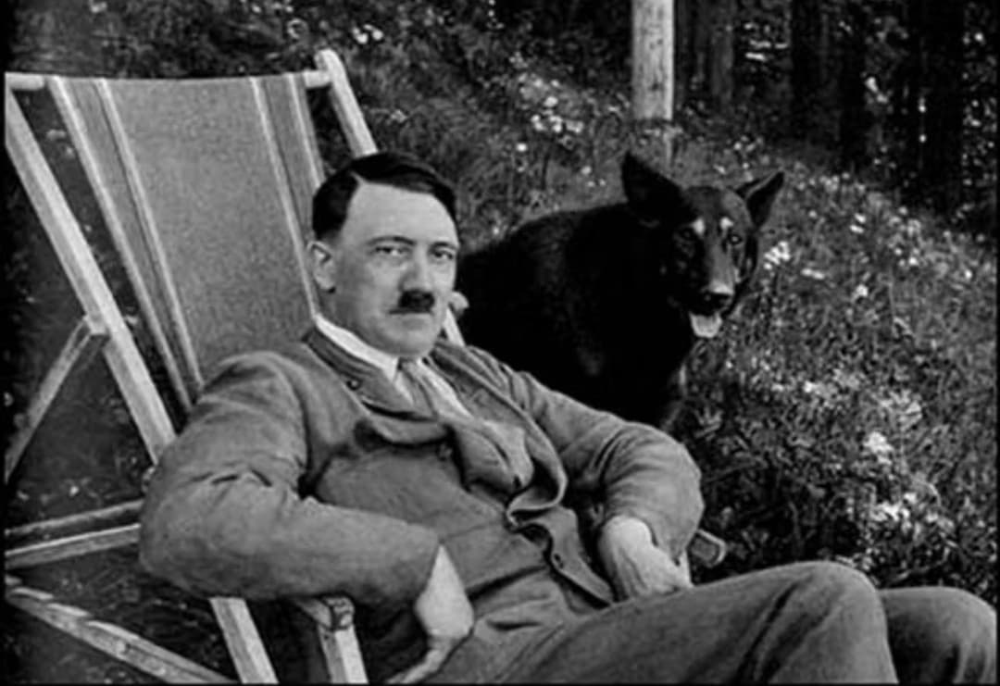
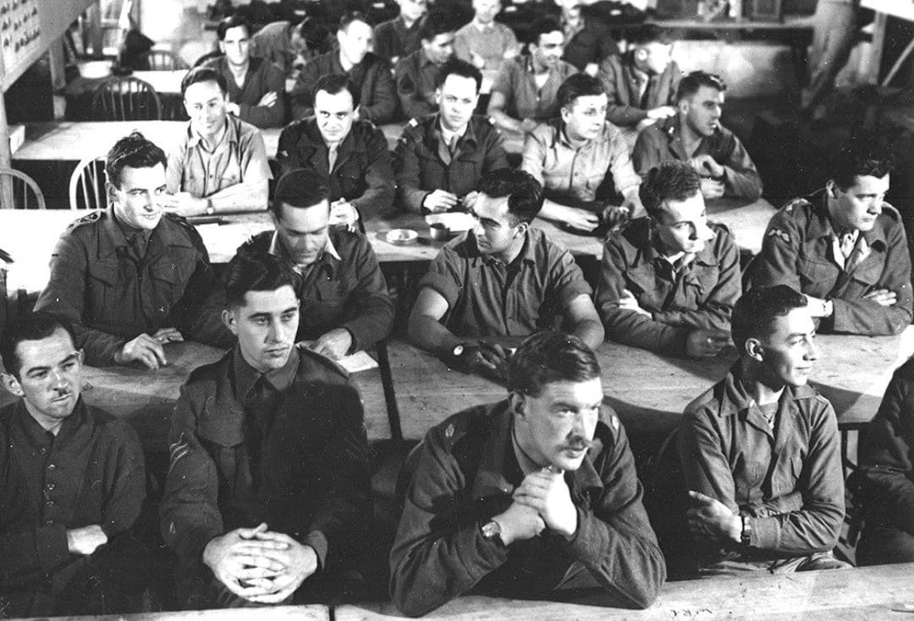
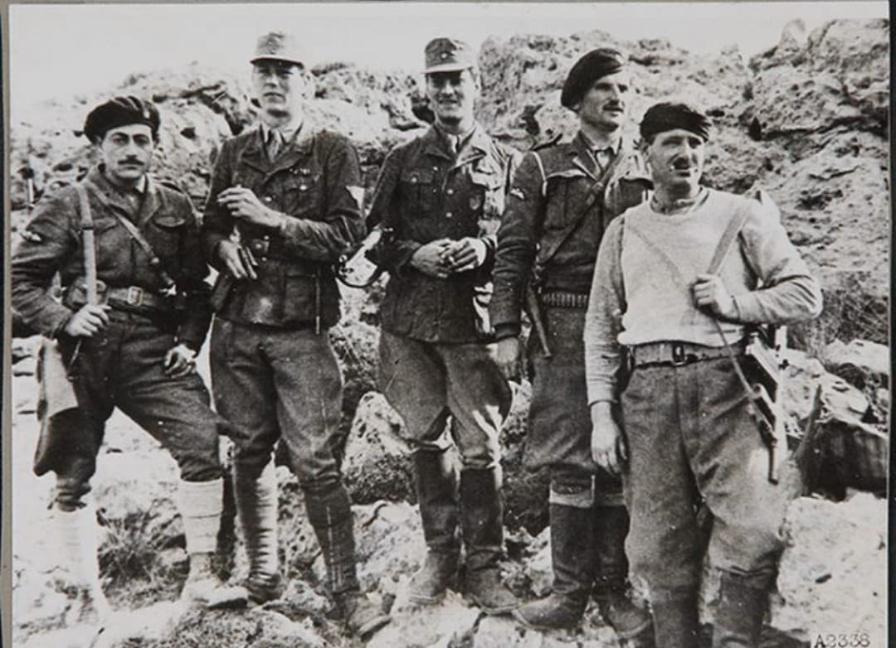

Au cœur de la Seconde Guerre mondiale, les services secrets britanniques mènent une guerre parallèle, discrète et méthodique contre le régime nazi. Leur objectif dépasse le sabotage ou le soutien aux résistances : ils cherchent à comprendre et exploiter les faiblesses du pouvoir allemand. Parmi les projets les plus audacieux étudiés par le SOE (Special Operations Executive), l’un se distingue : l’opération Foxley.
Élaborée en 1944, Foxley repose sur une idée simple mais explosive : neutraliser Adolf Hitler en profitant de ses routines quotidiennes. Les Britanniques analysent ses déplacements, ses habitudes au Berghof, ses promenades matinales et les failles de son dispositif de sécurité. Cette étude minutieuse vise à déterminer le moment exact où Hitler est le plus vulnérable.
Bien que l’opération ne soit jamais exécutée, elle révèle l’intensité du travail clandestin mené par les Alliés, les dilemmes politiques liés à l’élimination d’un chef d’État ennemi, et les hésitations stratégiques face à un acte susceptible de bouleverser l’équilibre du conflit. Foxley demeure aujourd’hui l’un des projets les plus documentés visant directement Hitler.
L’opération Foxley est le projet le plus avancé du SOE visant à neutraliser Adolf Hitler. Contrairement à d’autres idées évoquées durant la guerre, Foxley repose sur des données concrètes : horaires, itinéraires, habitudes, failles de sécurité. Les Britanniques envisagent une action chirurgicale, rapide et discrète, menée par un petit commando infiltré dans les Alpes bavaroises.
En 1944, l’Allemagne recule sur tous les fronts, mais Hitler conserve une influence considérable sur la stratégie militaire. Sa disparition pourrait accélérer la fin du conflit… ou au contraire renforcer la détermination allemande. Foxley est donc autant une opération militaire qu’un débat politique interne au commandement allié.
Hitler suit une routine stricte lorsqu’il séjourne au Berghof : lever tôt, promenade matinale, souvent accompagné de quelques gardes et de son chien. Ces trajets, effectués dans un environnement montagneux difficile à surveiller, constituent la principale faiblesse de son dispositif de sécurité.
Les analystes du SOE identifient plusieurs points clés :
Ces éléments font de la promenade matinale le moment le plus propice pour une intervention clandestine, sans combat prolongé et sans risque de dommages collatéraux.

Le Berghof, résidence alpine de Hitler, est un lieu stratégique : isolé, difficile d’accès, mais paradoxalement moins protégé que Berlin. Hitler y passe de longues périodes, entouré de proches, de conseillers et d’un personnel réduit.
Les Britanniques étudient :
Le Berghof devient ainsi le centre de l’analyse du SOE, un lieu où Hitler est à la fois protégé par l’isolement et vulnérable par ses routines.

Les équipes du SOE rassemblent des informations provenant de multiples sources : résistants, espions, interceptions, photographies aériennes, témoignages de civils. Leur travail consiste à reconstituer les habitudes de Hitler avec une précision quasi scientifique.
Les analystes produisent des cartes, des schémas, des horaires, des profils de sécurité et des scénarios d’intervention. Leur conclusion est claire : Hitler est vulnérable, mais seulement dans un cadre très précis, celui de ses promenades matinales au Berghof.

Le SOE prévoit un petit groupe d’opérateurs capables d’infiltrer les montagnes, de se camoufler dans le terrain et d’agir au moment où Hitler est le plus exposé. Ces hommes sont entraînés pour les opérations clandestines derrière les lignes ennemies : tir de précision, survie en milieu hostile, infiltration silencieuse.
Le commando devait être parachuté ou infiltré depuis la frontière autrichienne, puis progresser discrètement jusqu’au Berghof. L’opération reposait sur la rapidité, la discrétion et la capacité à disparaître immédiatement après l’action.
Malgré sa faisabilité technique, Foxley est abandonnée pour plusieurs raisons majeures :
Foxley devient alors un dossier classé, étudié mais jamais exécuté, symbole des dilemmes moraux et stratégiques de la guerre secrète.
L’opération Foxley reste l’un des projets les plus sérieux visant Hitler. Elle illustre l’intensité du travail du SOE, entre analyse, infiltration et action clandestine. Malgré sa faisabilité, elle ne fut jamais exécutée, mais demeure un exemple rare d’étude opérationnelle menée au cœur de la guerre secrète.